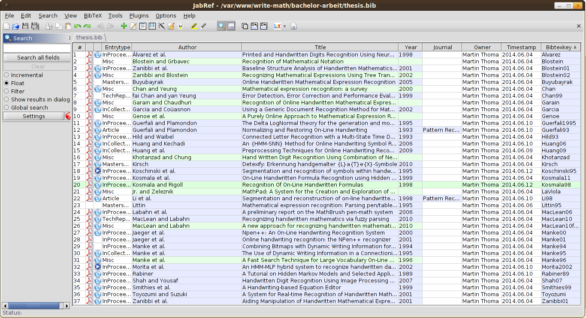
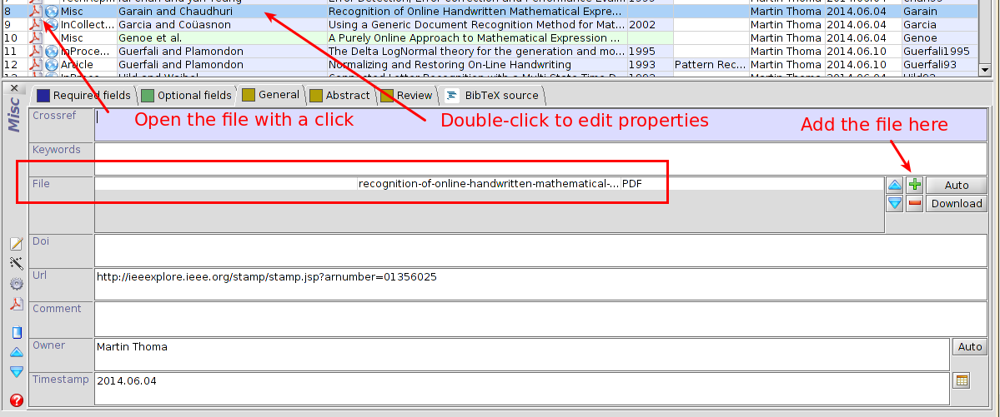
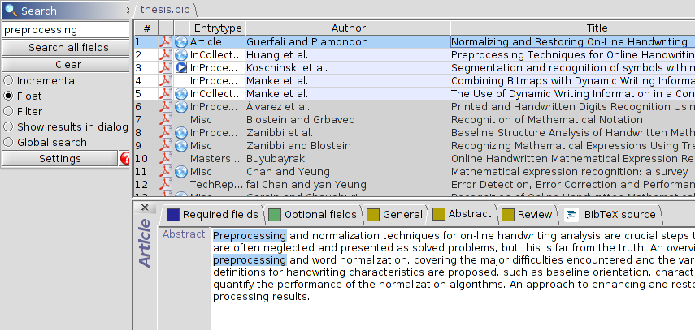
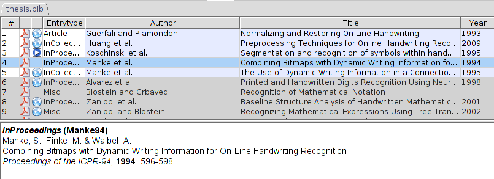

Keeping track of papers, articles and books or, more generally, sources you can cite is a task you will have to tackle when you're writing your thesis. One way to store information is via BibTeX files.
BibTeX is reference management software that is used together with LaTeX. If you're new to BibTeX or references in LaTeX in general, you could read the following articles:
- bibtex vs. biber and biblatex vs. natbib
- What is the difference between bibtex and biblatex? - I keep forgetting that all the time.
I've tried to create an MWE for biblatex, but as I don't really know much about BibTeX it's probably not the best resource to start with.
A longer working example of BibTeX is my bachelor's thesis (work is still in (slow) progress).
What is JabRef?
JabRef is reference management software that uses BibTeX as its native format. It looks like this:
{kind=link}

How can I get it?
JabRef 2.10 beta is part of the Debian sources. Thus it can be installed with
sudo apt-get install jabref
The official development page is jabref.sourceforge.net. As it is written in Java, it can be installed on all (or at least most) systems where you have a JVM (thus: good news Windows / Mac users!).
What's good about JabRef?
You can easily add the information where the PDF is located on your system and open the PDF directly via JabRef:
{kind=link}

This is especially powerful with the search. As you can add quite a lot of information to the entries (such as the abstract and comments) and searching that is faster / easier than searching folders of PDFs, it's very convenient to use JabRef for opening your PDFs:
{kind=link}

The preview also helps you to see how it might appear in your document:
{kind=link}

Another nice feature is the autocompletion of author names and titles.
What could be better?
It would be neat if you could automatically upload your BibTeX file and use other people's BibTeX files to complete the information or to get informed of possible errors in your database.
Additionally, a good PDF reader that is fast and allows annotations of which JabRef would be aware would be awesome.
Speed is quite often an issue with Java applications in my experience. It takes about 5 seconds to open my BibTeX file of about 37 references. After it has started, it's ok.
Shortcuts are important for tools that get used often, too. Although JabRef has some reasonable shortcuts like Ctrl+i for importing a BibTeX file and Ctrl+s for saving the current BibTeX file, I miss Ctrl+f for searching the database.
Importing other BibTeX files into the current BibTeX file is possible. But I would also like to "import" BibTeX data by copying and pasting a single dataset.
Alternatives
Mendeley is a closed-source alternative with a built-in PDF reader. It seems to be fast and can complete information when the title is given.